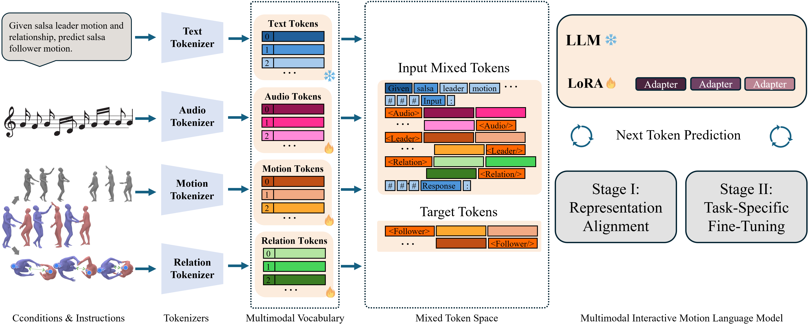

Abstract
Interaction between humanoids involves bidirectional and nonverbal reactivity, coordination, and synchrony. Toward socially aware robots and interactive virtual agents, we present SalsaAgent, a language model that generates expressive, full-body salsa dance motions in reaction to a human leader and against a contextual music backdrop. We formulate interaction as nonverbal motion token passing, extending the vocabulary of a large language model (LLM) to process discrete motion tokens, pairwise relation tokens, and audio. Our contributions include new tokens for full-body and motion relations, LLM fine-tuning using automatically derived text descriptions of skeleton dynamics for token grounding, and a two-stage token-to-diffusion pipeline. Subjective and objective evaluations demonstrate the effectiveness of our approach in terms of motion quality, music and partner coordination, and consistent two-person spatial behavior, with significant improvements over baselines.
Video
Approach

SalsaAgent targets leader-to-follower salsa generation: given audio and observed leader motion, the model predicts follower motion. The pipeline has three parts: (1) VQ-VAE tokenizers for full-body motion and pairwise leader–follower relation trajectories; (2) a multimodal LLM (Gemma2) with an extended vocabulary for motion, relation, and audio tokens, trained in two stages with LoRA and MotionScript text grounding; and (3) a diffusion-based refinement stage in shared world-frame joint space to improve partner geometry, timing, and contact detail while preserving LLM-level semantics.
Results
On CoMPAS3D, SalsaAgent achieves the lowest interaction FID among generative methods, stronger leader–follower beat alignment (BED), and substantially better follower kinematic FID than Duolando and InterGen. In a blind human study (31 participants, salsa experience), SalsaAgent was preferred over both baselines across timing, musicality, technique, partner coordination, and originality. For quantitative metrics, ablations, and full human-study analysis, please refer to our paper.
Qualitative Examples
Each example shows follower generation given the same leader motion and music on CoMPAS3D test clips. Clips are grouped by dancer proficiency: Beginner, Intermediate, or Professional. Compare Ground Truth, our full SalsaAgent model (with diffusion refinement), and baselines Duolando and InterGen.
Gallery
The gallery contains rendered videos for the full CoMPAS3D test set: ground truth, SalsaAgent (ours), and baselines Duolando and InterGen. Clips are exported as 100-frame windows with a 50-frame stride (512 samples in total). The Drive is organized into separate folders per method.
Rendered videos include synchronized audio. The observed leader is shown in blue; the reference or model-generated follower is shown in red (synthesized for Duolando, InterGen, and SalsaAgent).
Metadata for each clip includes the source take identifier, pair proficiency level (beginner, intermediate, or professional), and the start and end frame indices of the clip within the original recording.
3D joint trajectories are also provided as .npz files, containing per-frame 3D joint positions for both dancers,
for quantitative analysis or custom visualization.